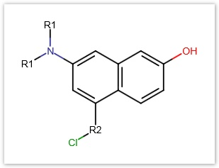
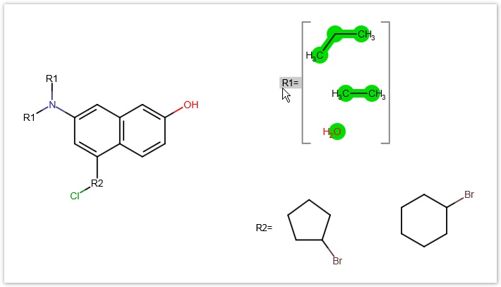
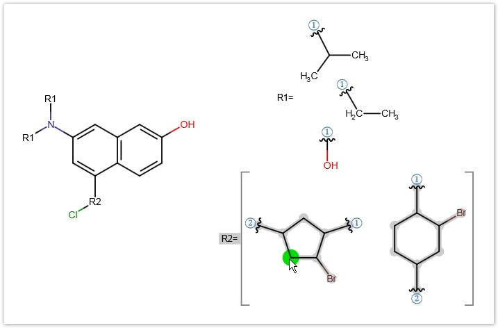

Marvin JS User's Guide
Table of Contents (Start)
R-group queries
A query with an R-group represents substitution variation on the same root structure.The molecule containing an R-group is the so called scaffold. An R-group query can involve several derivatives which differ in one or more substituents (fragments).
Creating R-groups
You can add R-groups to your root structure in three ways.
-
Smart R-group tool
Helps you to create many R-groups by just clicking on the right place in the molecule (sprout drawing is also possible). In this case, the default set is that the auto numbering is active, which means that R1, R2, ...etc. groups will automatically appear in the place of the clicking in the right order.
There is an option to add or change R-groups to the required number by clicking on an R-group (when the Smart R-group tool is active). Clicking on an existing R-group opens the R-group dialog window, here you can turn off the auto numbering by unchecking the box and set the number of the R-group. When you check the auto numbering box again, numbering will carry on from the first number that is not yet represented on the canvas. -
R+Space keyboard shortcut
Opens the R-group dialog window, where you can set the number of the R-group (or you can leave the field empty to get an R-group without any number).
After closing the window, the chosen R-group will appear on the tip of the mouse pointer and this can be added to the root structure in the same way as atoms are inserted. -
Atom Properties menu
Existing atoms can be replaced by R-group labels using the Atom properties dialog as well, where the 'R-group' type should be chosen instead of 'Element'. In this case you can set the number, alias or map to the R-group.

Managing R-group definitions
Creation
In order to create the definition for an R-group, draw the substituents from which the R-group should stand for, then you can choose from two options.
-
Smart R-group tool
Selecting with the Smart R-group tool results that the R-group label will be given to the fragment (or fragments), which appears on the canvas. When there is more than one R-group in the scaffold, the label of the fragment will get the smallest R-group number, which hasn't got a definition yet. -
R+Space keyboard shortcut
Select the substituent(s) by one of the Selection tools, and then type R+Space shortcut. The R-group dialog opens, and you can set the relevant R-label.
Adding/Removing elements to/from the definition
Add
-
Smart R-group tool
Selecting the substituents together with the Smart R-group tool results that the same R-group label will be given to the fragments. -
Context menu
If you want to add one or more fragments to an R-group definition, select these fragments (with the Selection tool), right-click on the relevant R-group label, then choose the "Add to this group" option.
Remove
-
Smart R-group tool
You can remove fragments from the definition by selecting it with the Smart R-group tool. In this case, the selected element will get a new label. -
Context menu
In order to remove a fragment from a group, select this fragment, right-click on the R-label of the group and select "Remove from this group" option.
Ungroup or Delete
If you do not wish to have an R-group definition any longer, you have some options to get rid of them.
Ungrouping the definition results that the fragments will not be erased, but they will not belong to an R-group definition any longer. You can do it this way: right-click on the R-group label, and use the "Ungroup" option in the pop-up menu.
In that case, the definition and all of its contents will be erased from the canvas. Deleting the definition can happen as with any other objects, by the Delete tool, or by the Delete keyboard button.
The contextual menu items of the R-label offer options for managing R-group definitions: you can ungroup or add fragments to a definition list, or remove fragments from a definition.

Adding Attachment points
You can add attachment points to the fragments in an R-group definition by using the R-group attachment point button on the Atoms toolbar and clicking on an atom in a definition list, or from the context menu. The attachment points on every separate fragment are automatically numbered beginning with "1".

The bond type of the R-group attachment points can be changed using either the R-group attachment point tool or any of the bond tools.
R-group definition import and export are supported only in ChemAxon Marvin Document (MRV) format in Marvin JS; besides, you can choose other formats if the relevant web service is available.